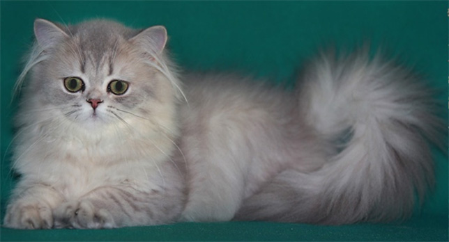
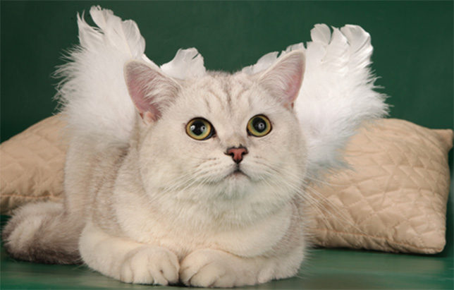
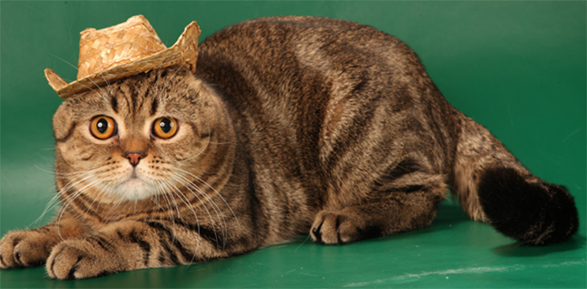

Наряду с традиционными серебристым и золотым окрасами британских и шотландских кошек, наш питомник работает с изумительно красивым, королевским окрасом - голубое и лиловое золото. Длинная или короткая шубка таких кошек переливается белым, кремовым, абрикосовым, голубым, лиловым цветом, а глубокие изумрудные глаза делают их просто восхитительными...
Мы не относимся к категории «разведенцев», содержащих кошек в клетках и беспрерывно вяжущих несчастных животных с целью получения максимальной прибыли. Наши кошки никогда не содержались и не будут содержаться в клетках, получают должный уход, полноценное питание, ласку и любовь хозяев. Британские и шотландские кошки очень привязаны к человеку, они преданы и очень умны.
Приняв решение завести питомца ответьте себе на вопрос, а сможете ли Вы ухаживать за ним, уделять достаточно внимания, обеспечивать не дешевыми кормами, а главное, прожить с ним всю его жизнь, не предать, не оставить, не выбросить на улицу как надоевшую игрушку.
Ответственно отнеситесь к выбору питомца. За каждым истинно породистым котенком стоит многолетний труд целой армии профессиональных заводчиков из разных стран , которые из поколения в поколение получали, закрепляли такое невинное детское выражение личика Вашего котенка, такой необыкновенный окрас, такую бархатистую или шелковистую шерстку, такой покладистый и доверчивый характер...
